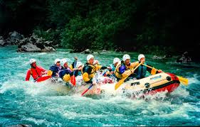

Join us for an unforgettable rafting experience! Our rafting tours are suitable for everyone, from beginners to experts.
White Water Rafting Co. was founded in 2000 from a passion for the great outdoors and the thrill of whitewater rafting in Canada. Starting with a single raft and a dream, the company set out to provide unforgettable experiences on the region's most scenic and exhilarating rivers.

With a focus on safety, adventure, and a deep respect for nature, River Rush quickly gained a reputation for creating memorable journeys. Over the years, it has grown into a trusted name in whitewater rafting, offering trips for everyone—from first-time adventurers to seasoned thrill-seekers—all while fostering a love for the waterways that inspire its mission.